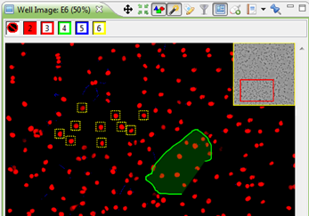
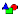
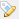
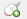
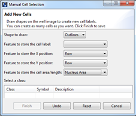
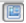

You can manipulate the image viewer by using the tool icons in the top:
| Button | Meaning |
|---|---|
| Toggle mouse mode: cell selection mode – pan mode Click the icon to toggle between modes  |
|
| Put the selected cells in the center of your Image Viewer. | |
| Pressing it multiple times will show/hide selection rectangles. | |
| Filter on classifications. You can only do this if there are any feature classifications defined for the well. | |
|  |
This allows you to toggle classification icons on or off. |
|  |
Edit classification of the selected cells. |
|  |
Manually add new cells, if they have not been segmented. By clicking this, you will get a pop-up window where you can select features and the method of selecting the cell (e.g. draw outlines).  |
|  |
Toggle the thumbnail in the top right corner of the image. Use the thumbnail to quickly move around the image. |
| Open or create a Saved view or report. | |
| Pin (freeze) the view so its contents will no longer change when you select another well. |
Note: You can use the mouse scroll wheel to quickly zoom in or out.